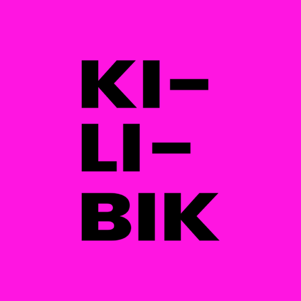

O görevi yazar, o hallettim der
Kılıbık iki telefonu birbirine bağlar. Biriniz Prenses olur ve görevleri yazar; diğeriniz Erkek olur ve onları hallettim diye işaretler. Fazlası yok, ayarlanacak bir şey yok — kimin sözünün geçtiği konusunda şakası olan ortak bir liste.
Yeni bir görev oluşturulduğunda, görevin atandığı telefona bir bildirim gider. Uygulamanın gönderdiği tek bildirim budur — pazarlama yok, hatırlatma yağmuru yok, günlük özet yok.
Bir görevi, onu yazan ve verildiği kişi görebilir. Başka kimse okuyamaz; uygulamada diğer kullanıcıları listeleme ya da arama diye bir şey yok — eşleşmenin tek yolu birinin sana elden verdiği bir kod.
İki taraf da eşleşmeyi istediği zaman bitirebilir. Bitirildiğinde aranızdaki bütün görevler ikinizden de silinir.